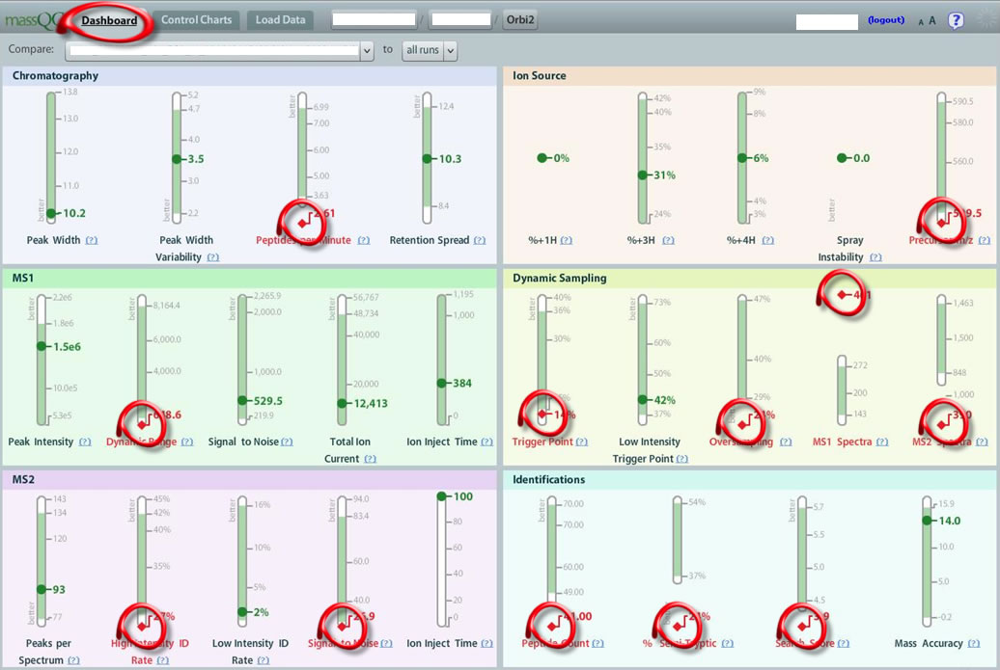
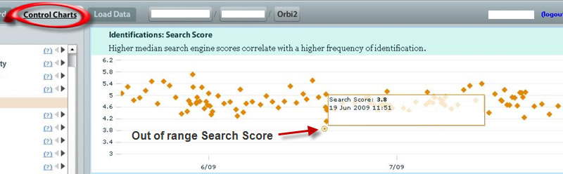
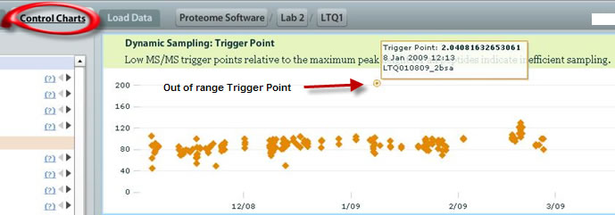

In this Troubleshooting section, we have seen many single- and multivariate cases of out of range metrics. These can be acute changes or long term trends. Sometimes, one metric can catch your attention, while other times, many metrics are off, indicating a more serious problem.
In this example, we are looking at a run that has several metrics that are very much out of range. Viewing the MassQC Dashboard , nearly half of the total metrics in MassQC are out of range, as compared to the historical data: in Chromatography , Peptides Per Minute ; at the Ion Source , Precursor m/z ; for MS1 , the Dynamic Range is off; for Dynamic Sampling , the Trigger Point , Oversampling , MS1 Spectra and MS2 Spectra metrics are all out of range. At the MS2 level, High Intensity ID Rate and Signal To Noise ; and, finally, for Identifications , Peptide Count , Percent Semi-Tryptic and Search Score are all deviated from the historical data.

Each one of these metrics can be viewed in the Control Charts . And this is precisely what the technician should do. For our purposes, we can see the trend by looking at the fluctuations in Search Score :

And by looking at Trigger Point :

This is an example of a series of red flags that needs immediate attention. MassQC clearly indicates that this instrument should not be used to run valuable samples until these issues are addressed. So what could be the problem here? There is definitely something going on with regard to Dynamic Sampling . You could have contamination , which may cause incorrect sampling and/or lower peptide matches; the tryptic digest could have failed or been less efficient; or, there could be column issues or pump/solvent gradient problems leading to elution mishaps. Whatever the cause, this is a perfect example of multiple failure and the LC-MS system should be thoroughly evaluated before processing any further samples.
When issues arise relating to Dynamic Sampling , usually other metrics fail also. In this case, we see a number of Identification metrics fall out of range.
- Chromatography: Peptides Per Minute
- Ion Source: Precursor m/z
- MS1: Dynamic Range
- Dynamic Sampling: Trigger Point
- Dynamic Sampling: Oversampling
- Dynamic Sampling: MS1 Spectra
- Dynamic Sampling: MS2 Spectra
- MS2: High Intensity ID Rate
- MS2: Signal To Noise
- Identifications: Peptide Count
- Identifications: Percent Semi-Tryptic
- Identifications: Search Score
If you have questions, comments and/or insights about MassQC , you can share them on the MassQC Users Forum .